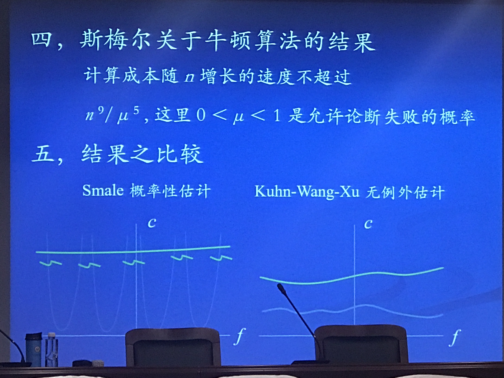
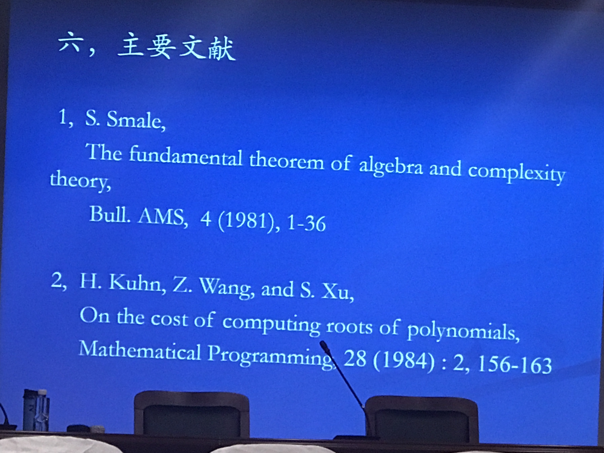

复平面对\(C\times[0,\infty)\)做单纯剖分,越往上剖分越细 对剖分的顶点按照w=f(z)做如下整数标号
对于\(C\times[0,\infty)\)上的顶点,按照\(f(z)=z^n\)进行标号
易知计算只在半空间的一个大圆筒内进行 每个四面体只能穿行一次 算法的可行性
 
牛顿方法（初始的选取）
« Prev Page
其他 数学建模 基础数学 计算机 数值分析/计算物理
Copyright © 2015 Powered by MWeb, Theme used GitHub CSS.